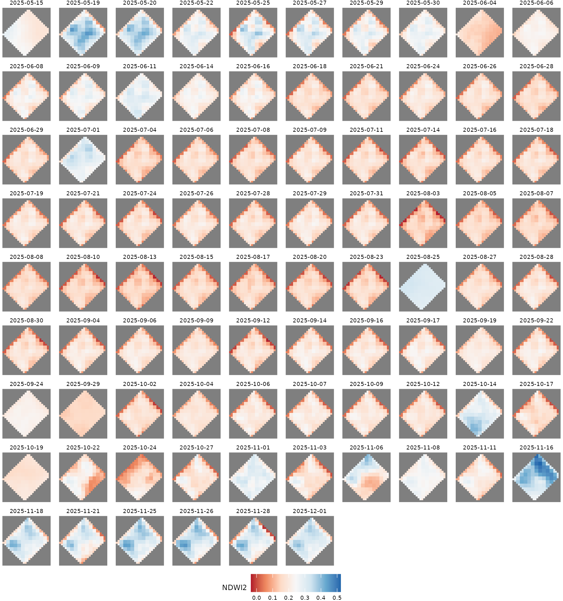
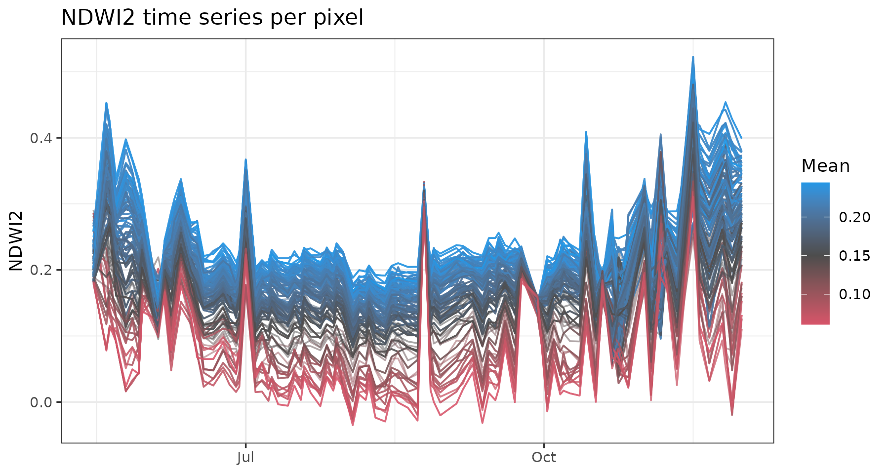
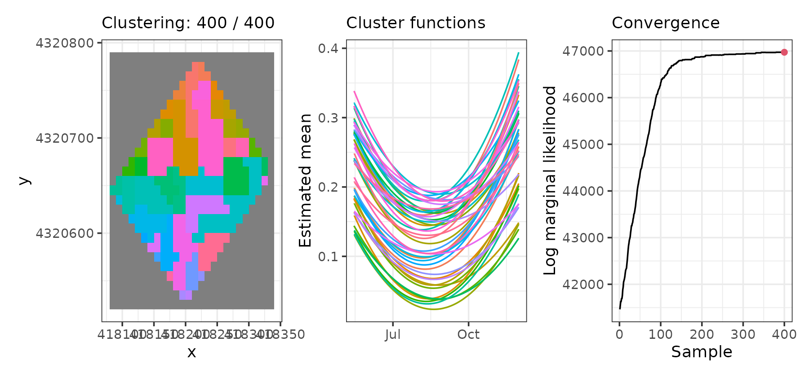
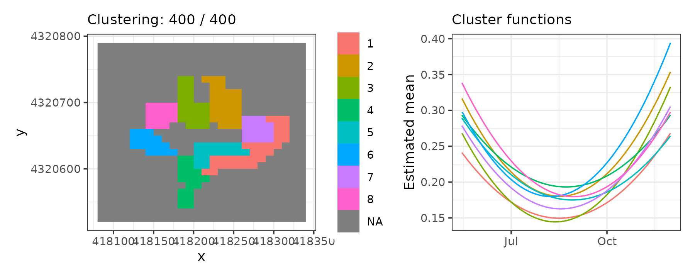
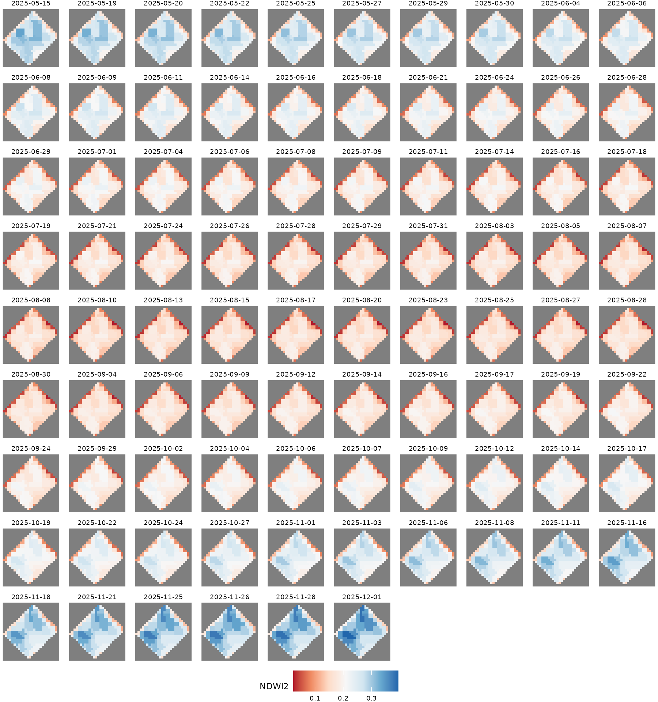
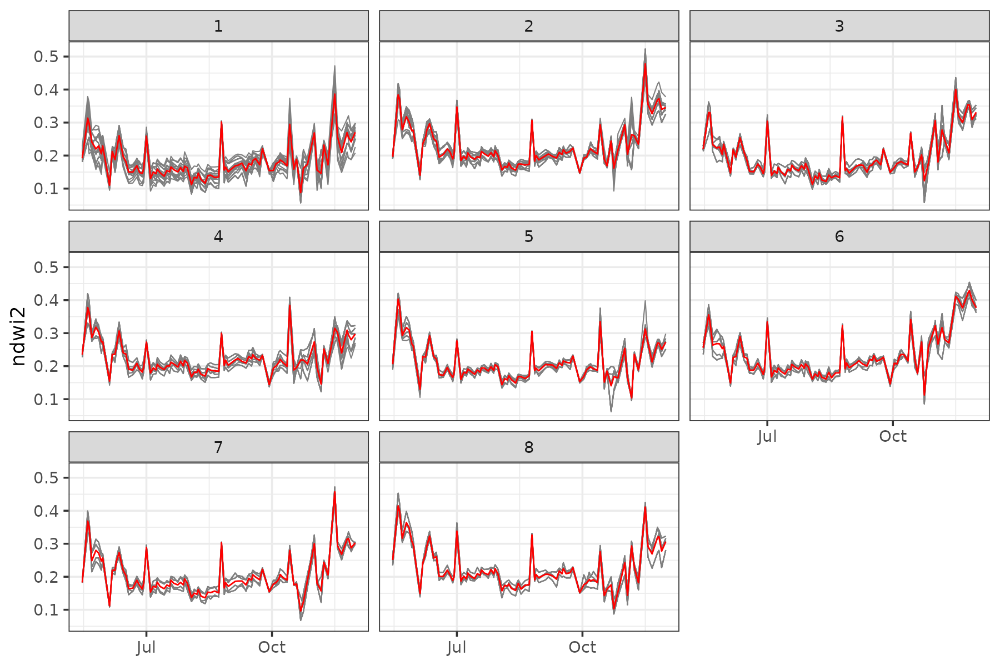

Clustering raster spatio-temporal data (NDWI2)
Source:vignettes/articles/vg13-ndwi-chaparrillo.Rmd
vg13-ndwi-chaparrillo.RmdIn this vignette, we use the sfclust package with
raster spatio-temporal data. We cluster the functional
trend of the NDWI2 vegetation water index (stored as the
ndwi2 column) for each cell in the agricultural experiment
in “El Chaparrillo” over the period May–December 2025. The
ndwi2 values are derived from Sentinel-2 imagery and are
bundled with the package as the chapa dataset.
Load packages and data
chapa#> stars object with 3 dimensions and 1 attribute
#> attribute(s):
#> Min. 1st Qu. Median Mean 3rd Qu. Max. NAs
#> ndwi2 -0.03494883 0.1527428 0.1872349 0.193792 0.2270235 0.5227525 31562
#> dimension(s):
#> from to offset delta refsys point
#> x 1 26 418080 10 WGS 84 / UTM zone 30N FALSE
#> y 1 27 4320790 -10 WGS 84 / UTM zone 30N FALSE
#> time 1 86 NA NA Date NA
#> values x/y
#> x NULL [x]
#> y NULL [y]
#> time 2025-05-15,...,2025-12-01Exploratory analysis
We start by visualizing the spatio-temporal behaviour of NDWI2.
ggplot() +
geom_stars(aes(fill = ndwi2), data = chapa) +
facet_wrap(~ time) +
scale_fill_distiller(palette = "RdBu", direction = 1, na.value = "grey50") +
labs(fill = "NDWI2") +
theme_void(base_size = 7) +
theme(legend.position = "bottom")
Notice that these data contain cells with NA values.
sfclust() automatically builds a graph that respects the
connectivity of the cells and excludes the NA cells from the
clustering.
We can also plot the pixel-level time series to see how NDWI2 evolves over the period.
chapa_aux <- as_tibble(chapa) |>
filter(!is.na(ndwi2)) |>
mutate(pixel = paste(x, y, sep = "-")) |>
group_by(pixel) |>
mutate(pixel_mean = mean(ndwi2)) |>
ungroup()
ggplot(chapa_aux, aes(time, ndwi2, group = pixel)) +
geom_line(aes(color = pixel_mean), alpha = 0.5, linewidth = 0.5) +
scale_color_gradient2(low = 2, mid = "gray30", high = 4, midpoint = 0.15) +
labs(title = "NDWI2 time series per pixel", x = NULL, y = "NDWI2", color = "Mean") +
theme_bw()
Model fitting
We model NDWI2 within each cluster as a quadratic polynomial in time (cell and time ):
where
and
are polynomial basis functions with respect to time and
error term
normally distributed with zero-mean and variance
.
set.seed(7)
result <- sfclust(
chapa, nclust = 335, formula = ndwi2 ~ poly(time, 2),
niter = 4000, thin = 10, nmessage = 100, nsave = 1000,
path_save = "chapa-mcmc.rds"
)
result#> Within-cluster formula:
#> ndwi2 ~ poly(time, 2)
#>
#> Clustering hyperparameters:
#> log(1-q) birth death change hyper
#> -0.6931472 0.4250000 0.4250000 0.1000000 0.0500000
#>
#> Clustering movement counts:
#> births deaths changes hypers
#> 40 329 43 212
#>
#> Log marginal likelihood (sample 400 out of 400): 46972.28Over the course of sampling, 40 cluster additions, 329 merges, 43 reassignments, and 212 hyperparameter updates occurred. The marginal likelihood reached a value of 46,972.3. After thinning, 400 samples were retained.
Results
According to the summary() output, 13 out of 46 clusters
have more than 8 members. The largest clusters contain 32, 28, and 23
pixels, respectively.
summary(result, sort = TRUE)#> Summary for clustering sample 400 out of 400
#>
#> Within-cluster formula:
#> ndwi2 ~ poly(time, 2)
#>
#> Counts per cluster:
#> 1 2 3 4 5 6 7 8 9 10 11 12 13 14 15 16 17 18 19 20 21 22 23 24 25 26
#> 32 28 23 19 17 16 15 15 13 13 13 13 11 8 8 8 7 5 4 4 4 4 4 4 3 3
#> 27 28 29 30 31 32 33 34 35 36 37 38 39 40 41 42 43 44 45 46
#> 3 3 3 3 3 3 3 3 3 3 2 1 1 1 1 1 1 1 1 1
#>
#> Log marginal likelihood: 46972.28The figure below shows the spatial distribution of the inferred clusters over the raster grid, the fitted functional shapes, and the traceplot of the log marginal likelihood across MCMC samples. Convergence appears to have been practically achieved.
plot(result)
Let’s visualize only the 8 biggest clusters. Cluster 1 is located in the southeast and has lower ndwi2 levels, while cluster 2 is located north of center and usually has higher ndwi2 values.
plot(result, which = 1:2, sort = TRUE, clusters = 1:8, legend = TRUE)
Fitted values
We can visualize the cluster mean values over space and time. It shows that ndwi2 values are lower around July, with higher values in November–December.
pred <- fitted(result, sort = TRUE)
ggplot() +
geom_stars(aes(fill = mean_cluster), data = pred) +
facet_wrap(~ time) +
scale_fill_distiller(palette = "RdBu", direction = 1, na.value = "grey50") +
labs(fill = "NDWI2") +
theme_void(base_size = 7) +
theme(legend.position = "bottom")
Finally, let’s visualize the functional trends of the 8 biggest clusters. We can see that the pixels belonging to each cluster actually have a very similar evolution over time.
plot_clusters_series(result, ndwi2, sort = TRUE, clusters = 1:8)